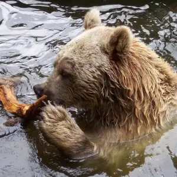
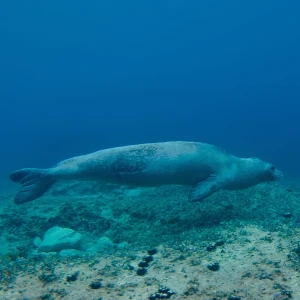

2 SPECIE

Found in the mountains of Syria, the Syrian Brown Bear is a subspecies of the Brown Bear.

The Mediterranean Monk Seal is one of the world's most endangered marine mammals, primarily found in the Mediterranean and parts of the eastern Atlantic.